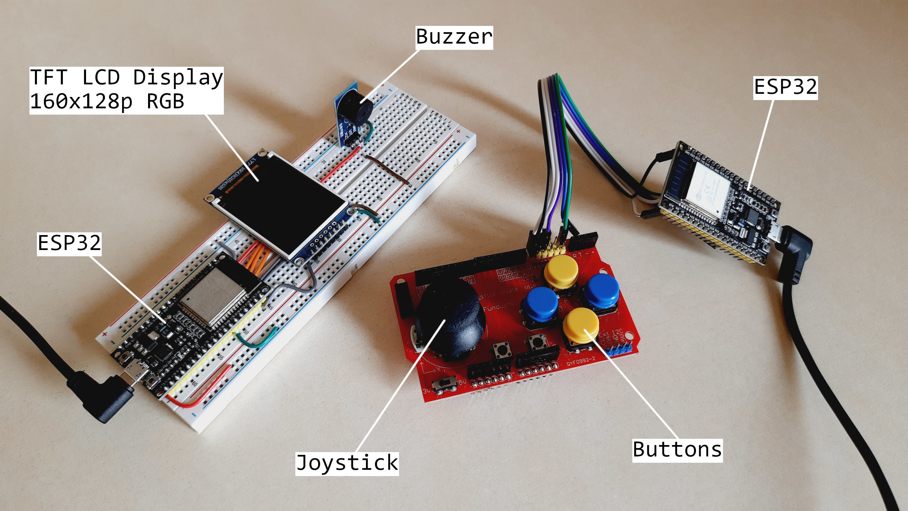

ESP32-based Platform Game
Project repository
Written: 09th of July 2023
Last updated: 09th of July 2023
Timeline: 2023 - Developed peripheral drivers & game engine
Created worlds 'The Shire' & 'The Mines of Moria'
Platform: ESP32-WROOM-32
Framework: ESP-IDF
In the context of my career change from mechanical to embedded software engineering, I was looking for starting a project that would be rich in learning, creative and fun to build. Its purpose would be threefold:
- To continue developing my C programming skills,
- To write drivers for several external peripherals,
- And to work with at least two communication protocols.
Plus, living abroad from Airbnbs to Airbnbs required me to travel light, so I’d need a project using small components. Making a game console with its own game answered this problem: a microcontroller, a display, and a joystick and I was good to go. Any other component would be a bonus.
After that, I settled on the platform sub-genre. It is challenging enough to push myself, is modular in terms of features and definitely compatible with the computing power of a microcontroller. As for the choice of the game’s theme? Well, I too, was going on an adventure!
Now that the introduction is done, let’s get started. This presentation will focus on the technical aspects of the project, specifically the peripheral’s drivers & protocols used, the inner workings of the game engine, as well as how I overcame performance and memory constraints.
TL;DR
- The embedded system consists of a console and a controller using ESP32 microcontrollers and BLE communication, with a sequential firmware architecture and modular layers for independent testing and debugging.
- Graphics and sounds in the game utilize custom hardware drivers for building frames and controlling frequencies, while events are managed through records to trigger responses and modify the game environment.
- In terms of system resource efficiency, the firmware prioritizes static memory allocation, optimizes SPI transactions, and uses DMA to achieve a target frame rate of 30+ FPS.
Contents
- System Overview
- Firmware Architecture
- Graphics and Sound
- Game Interactivity
- Gamepad and Bluetooth Low Energy
- System Resource Efficiency
- Results & Potential Improvements
- Wrapping Up
System Overview
The system is made of two main parts, each having its own firmware: the “console” and the “controller”. The console is where the game runs and displays: it is composed of an ESP32, a 160x128 TFT LCD display and a buzzer. The controller is the interface between the user and the game: it also features an ESP32 and has a gamepad made of a joystick and a few buttons. Both systems communicate wirelessly via Bluetooth Low Energy (BLE).
I have chosen to use two ESP32 microcontrollers for this project as I wanted both the console and the controller to be physically separated, which would allow the latter to be handled freely from the rest of the system. ESP32 supports several wireless communication protocols, such as Wi-Fi, Bluetooth, and BLE, which makes it a great choice for this application.
BLE is not the only type of communication used in the system. The console’s ESP32 sends the game frames to the external LCD display via a Serial Peripheral Interface (SPI) communication. Because the display does not communicate anything back to the microcontroller unit (MCU), a variant called 3-wire SPI is used, which uses only the Master Out Slave In (MOSI) line.
On the controller, the position of the joystick is read through the ESP32’s Analog-to-Digital Converter (ADC) module and the buttons via simple General Input Output Pin (GPIO) state reading.
Firmware Architecture
Program flow
The firmware starts with initializing the BLE client/server tasks, initializing the hardware and loading the game (console-side). Loading the game is the process of scanning a game map - a custom data structure, more on this later - to load dynamic assets in memory, such as game state variables, records, enemies, platforms, etc. Follows the display of the main menu while playing the introduction music.
The program flow then enters the main part of the firmware: a loop that can only be broken if the game is over. This loop, which we call the game loop for later references, is where most of the computing time is spent. It iterates exactly at a capped 35 Frames Per Seconds (FPS) refresh rate.
The mechanism to cap the refresh rate is the following: a hardware timer is used; if the processor tries to initiate a new iteration too early, the whole loop is ignored and the processor checks the time again, until t = 1 / FPS is reached. I purposefully did not show this mechanism on the flowchart below to simplify its representation.

The game loop consists in reading/processing the gamepad input values, computing all the game logic, and generating the graphics/sound outputs. Every iteration, an array of 20480 (160x128) 16-bit integers is updated and sent via SPI to the LCD display. This specific array, called frame in the firmware, is the keystone of the firmware’s graphic management.
As no RTOS is used for the project outside of the BLE stack, all those tasks are run sequentially. We could wonder if a sequential architecture is an issue for this application? The answer is that it depends on the requirements of the project. My target refresh rate was 30 FPS (or 33 milliseconds to complete one iteration), and the system can actually reach 35 FPS, so the blocking nature of the architecture is compatible with the target specification. Yet, if one wanted more FPS, it would become an issue.
To reach higher frame rates, I would have to use the second core of the Xtensa LX6 processor and redesign the firmware to allow multithreading. This is a future improvement I discuss in the Results & Potential improvements section.
Drivers and libraries
From the very start of the project, I wanted a firmware to be designed around independent layers, relying only on the layer below them, rather than a large and single piece of code. The reason for this is threefold: modularity, maintainability and adaptability to potential future modifications.
Hence, the firmware is built on four main layers:
- The ESP-IDF API (and nimBLE for the BLE stack),
- The hardware drivers,
- The game engine,
- And the game application.
Except for the base APIs & the BLE GAP code, all layers are fully custom and written from scratch in C. As a note, the BLE GATT server code is based on example files provided by Espressif, that I have modified to fit this project.
Separating the firmware in different modules also allowed me to build and test them independently, effectively isolating any unknown bound to a specific module from the rest of the system. This greatly accelerates the testing and debugging phases of the development process, and improves the overall quality and robustness of the code.
Starting from the lower level, we have the hardware drivers: the LCD display driver (ST7735S), the buzzer driver (MH-FMD), and the gamepad driver. Those drivers take care of creating an abstraction layer between the hardware and the application by providing a set of specific functions and data structures. They rely on the standard C libraries and the ESP-IDF API.
On top of the hardware drivers comes the game engine and the GATT server. The game engine is a fully custom library that provides a set of tools to make a platform game application. Here are some of the main features it provides:
- Frame generation using graphics assets (sprites, animations, text, etc.)
- Physics computation of dynamic objects (gravity, collision, aiming, etc.)
- Event logging of interactions with the game's environment.
The game engine is divided into multiple source files, with each file dedicated to a specific functionality of the game.
Regarding the GATT server, the gamepad’s driver is used to read the position of the joystick whenever a read request from the BLE client is received. More on this in the Gamepad and Bluetooth Low Energy section.
Graphics and Sound
The graphics and sound output of the game rely on the building blocks of this projects: the hardware drivers. Written from scratch, they allowed me to build the game engine using their set of functionalities, like sending formatted data to their peripheral. For example, the custom ST7735S driver offers various data structures and functions to draw basic objects on the screen, like circles, rectangles, text, and custom sprites.
Let’s have a look at how those drivers are used by the game engine to bring Tolkien's universe to life.
How are frames built and displayed?
A frame is a 2D array that carries the information to visualize the current state of the game, centered around the player’s character. Each value of the frame represents a pixel of the display. Hence, the number of elements in the frame is as large as the resolution of the display. In this project, I am using a 160x128 pixel TFT LCD display, accounting for a total of 20480 pixels.
To print anything on the screen, pixels must be given a color code value, usually as an hexadecimal number. The display’s micro-chip driver, namely the ST7735S, accepts three types of color code formats: 12-bit, 16-bit, and 18-bit color codes. The higher the color code, the larger the available color palette is, at the expense of memory. Let’s see how much memory would be needed for each of those color codes on our frame:
- (12-bit) 4-4-4 RGB:
- Up to 4000 different colors
- Would have to use the nearest larger data type available: 16-bit integer
- Memory used: 20480 pixels * 16 bits / 8 bits-per-byte = 40960 bytes
- (16-bit) 5-6-5 RGB:
- Up to 65000 different colors
- Same as for the 12-bit format: 40960 bytes
- (18-bit) 6-6-6 RGB:
- Up to 262000 different colors
- Would have to use the nearest larger data type available: 32-bit integer
- Memory used: 20480 pixels * 32 bits / 8 bits-per-byte = 81920 bytes
Obviously, I didn’t need a palette of 262k colors, and both the 12-bit and 16-bit color codes lead to the same memory size, so I went with 16-bit integers. From this point on, I knew I had to allocate 40.96 kB of memory for the frame.
In order to be displayed, the frame must first be built to represent the current snapshot of the game. This includes the main character, enemies, items, and most importantly the background environment.
In platform games, the environment is generally made of blocks, which are elements fitting in a fixed-sized box frame. When everything is considered a block, the environment becomes a large grid. Looking at the resolution of the display (160x128 px), I could figure out the size of my grid: a 16-pixel padding would make exactly 8 rows and 10 columns on the frame.
The purpose of using a block-based framework is to counter a memory constraint: to be able to play for a few minutes, a world needs to be quite lengthy. Looking at other games like Super Mario Bros. (1985), I counted a total distance of ~200 blocks for a full world. Knowing that a block is 16 pixels width/height, it gives us 200*8*(16)² = 409600 pixels worth of game map. Remember that I use 16-bit color codes, or 2 bytes per pixel. We’re now at 819.2 kB of memory for a single world map. I want at least 2 maps for the game, and the maximum amount of memory on an ESP32 is around 300 kB. That is where we leverage the concept of blocks.
Instead of storing every single pixel in a mega-sized array, I’m only storing integers representing the type of a block. This way, a world map can be stored in a 200x8 array holding simple 8-bit signed integers: 0 could be the ‘air’, 1 an earthy block, 2 a water block, etc. This method shrinks the memory required for a full world map from 819.2 kB to 1.6 kB (+512 bytes per block type (sprite) ~= +4.6 kB).
This array is stored in a data structure map_t defined in the game engine. There is a map_t object for each world in the game, and the struct holds other information such as the map id, the background color, and rows/columns to be used for specific purposes.
#define NUM_BLOCKS_Y 8 // number of rows
struct map_t {
const map_id_t id; // integer id
const uint16_t background_color; // 16-bit background color
const int8_t (*data)[NUM_BLOCKS_Y]; // world map data
... // other less important members
};
With each block type having its 16x16 sprite loaded in memory once and once only, the process of building a frame can take place. After filling the frame with the map’s background color, the portion of the map array around the player’s location is scanned and the appropriate sprite is copied/pasted onto the frame. This process is done by the display module of the game engine.

Whenever the player’s character reaches half of the display’s width, the frame moves to the right by increments of the character’s speed (currently 1 pixel per iteration). To avoid having dark spots whenever the frame is offset from the map’s grid, the firmware scans the 11th column as well.
For the frame to be displayed, it must be sent via SPI to the ST7735S micro-chip of the external LCD screen. Unfortunately, due its size and limitations of the ESP32’s SPI module, the frame cannot be sent in one transaction. Without Direct Memory Access (DMA), only 64 bytes can be sent at once (4092 bytes with DMA). As the size of the frame is 40.96 kB, I had to chop the frame in 640 packets and send those packets one after the other.
This implies that frame[] does not share the dimensions of the screen, and does not look like the snapshots that I showed in the previous examples. Its rows represent the number of transactions, and the columns are the number of pixels per transaction.

To figure out where to place each pixel in the frame, the function get_frame_indexes() makes use of division and modulo operations to convert the Cartesian coordinates (x, y) of the display to the indexes of the frame.
How are sound effects created and played?
As we’ve seen earlier in the Overview section, sounds are played via a 3.3V piezoelectric buzzer wired to the console’s MCU. Piezoelectric buzzers are active electromechanical devices using a flexible membrane to generate sound waves. When an oscillating signal is fed to the buzzer, the membrane will bend inward and outward at the frequency of the oscillation.
Knowing this, if a sequence of frequencies can be given at controlled intervals, a melody can be played. Using 16-bit unsigned integers gives us frequencies ranging from 0 Hz to 65 535 Hz. In practice, there is little need to go over 3000 Hz as the pitch would be too high anyway.
To send a frequency over to the buzzer, I am using the manufacturer’s Pulse Width Modulation (PWM) API. From this API, the function ledc_set_freq() allows the developer to set a frequency to the given PWM channel. While a sound effect is being played, this function is repeatedly called with the new frequency after the previous note’s duration is over. It keeps doing so until all notes (or frequencies) have been played. The PWM signal is fixed at 50% duty cycle to have a balanced sound output.
struct music_t {
uint8_t playing : 1; // 1 if the music is playing
uint8_t note_index;
uint32_t timer;
const uint16_t num_notes; // Number of notes
const uint16_t duration; // Note duration, in milliseconds
const uint16_t *data; // Music data
};
For every sound effect, a data structure music_t is loaded in memory at compile time. Its constant members define the properties of the sound effect: a pointer to the data, the number of notes and the duration of each note. Non-constant members are updated at runtime whenever the sound effect is played.
At the game’s level, a pointer music_t *cued_music is used to remember the next sound effect to be played. The pointer is updated by the game engine whenever an in-game interaction happens: block collision, enemy’s death, spell used, etc. Every game loop cued_music is checked, and if non-NULL, play_music() is called with the pointer as argument.
Game Interactivity
Physics: simulating collisions and gravity
To create an immersive gameplay and give games a sense of reality, simple physics simulations are often implemented in video game projects. This one is no exception. Blocks made of “solid matter” are one of the main obstacles in this platform game, so I needed to make sure the player couldn’t run through them.
For this, I developed a collision feature that can apply a “reactive force” to a moving entity, expressed in the game engine as a physics_t object. Entities like the player’s character or enemies have a physics_t member in their own data structure.
Because of the number of nodes and configurations, physics simulations are known to be computationally expensive. Even if this is a simple application, it is still running on an embedded system, with limited resources. Hence, to kill two birds with one stone, I’ve leveraged once again the block-based framework of the game: collisions are not checked at the pixel level, but at the block level. This way, instead of iterating through the outer 64 pixels of the studied entity (a 16x16 element), the program only checks for the 4 nearby blocks. Here is how it works.
If all four blocks around the entity are non-solid (such as a background block) or destroyed, the check_collision() function returns immediately, avoiding useless computation.
struct physics_t {
uint8_t top_collision : 1;
uint8_t bottom_collision : 1;
uint8_t left_collision : 1;
uint8_t right_collision : 1;
uint8_t falling : 1;
uint8_t jumping : 1;
uint8_t accelerating : 1;
int16_t pos_x;
int16_t pos_y;
int8_t speed_x;
int8_t speed_y;
};
However, if an interference is found, the position of the entity is corrected using the location of the interference. Every iteration of a game loop, both the main character and enemies are subject to collision checks.
Finally, gravity is applied on physics_t objects by continuously decreasing their y-position, effectively making them fall down. By using both gravity and collision mechanisms, the firmware manages to simulate a complete model where the entities “walk” on the surface of the floor. As pull forces (from gravity) and reactive forces (from collisions) compensate each other, the position remains still. Just like in real life.
The concept of acceleration is a particular one in this game. Originally, I wanted to use proper equations of motions to compute the position of an entity, be it falling, jumping or running. Yet using those equations results in having float numbers. Floats are large data types (usually 32-bits), and need to be rounded, leading to rounding errors and loss of information. It was not suitable for the block-based framework of the game.
Hence I used a time interval as a threshold. Whenever the threshold is reached during the course of an action, like falling, the speed of the physics_t object is increased, simulating an ongoing acceleration. Upon touching “solid matter”, the speed of the entity is reset to its initial value SPEED_INITIAL. As I explain in the last section about potential improvements, this method does have some flows as the entity’s velocity is based on the execution speed of the program.
There are many other physics-like mechanisms in the game, such as aiming, line of sight detection, slippy block edges, etc. If you’re interested, you can have a look at the source files of the game engine, which are detailed with lots of comments.
In-game interactions: handling events
What is an event and why is it important to handle them?
Events are occurrences, generally happening due to inputs from the player, that can modify the game’s environment or trigger a response from the system, such as a sound effect being played. Handling them properly helps to make the game interactive and creates a more immersive gameplay.
In April 2023, when I started this project, I did not know the concept of event-driven programming and callback functions. To handle events, I designed a system of records whose purpose is to store and manage events.
Those records are data structures carrying flags that identify the current state of an interactive element. They are created whenever an event occurs and identify the interactive element using its unique row & column indexes (from the map’s array).
struct block_t {
uint8_t is_hit : 1;
uint8_t destroyed : 1;
uint8_t item_given : 1;
uint8_t bumping : 1;
int16_t row;
int8_t column;
};
If a chest block is opened, the record will have the flags is_hit and bumping set to 1. This will trigger the system to release an item from the chest, and start a bumping animation. Once the item is given, the record from this block will be retrieved and updated by setting the flag item_given flag to 1. From now on, this chest block is unlocked and cannot release an item anymore.
Records are also used during the frame construction process. For example, if an enemy was killed by the player, the firmware will know it from reading the enemy’s record and decide not to print its sprite on the frame. Every game loop, arrays holding those records are scanned and cleaned. The cleaning process removes records of elements that are beyond the player’s current position.
Gamepad and Bluetooth Low Energy
As the only way to provide input, the gamepad is an important component of the system. It is composed of an analog thumb joystick and 6 buttons. In this project, I use the x-axis of the joystick to move the character forward and backward, as well as two buttons: A to use a spell and C to jump.
Implementing the gamepad to the system could be as simple as using an Analog to Digital Converter (ADC) module and polling the state of some GPIOs. But hardware always comes with its own issues, and this gamepad is no exception.
Implementing the gamepad in the system
Joystick’s behavior correction
Each of the joystick’s axes has a potentiometer that is used as a voltage divider. The voltage across the potentiometer is fed to an ADC and converted into a raw integer value. We can define the behavior of an axis taking three positions:
- Fully pushed to the left,
- Fully pushed to the right,
- Idle in the middle.
Here comes the hitch. Because the potentiometer is not perfectly centered on its resistive track, its behavior isn’t linear. The left and right tracks differ by a small margin, significant enough to feel something is off when using the joystick. In the case of the x-axis, the left resistive track seems to be shorter than the right one, as we can see on the plot below.
To correct this defect, I have used a linear regression between the utmost left and right position so that the idle position is artificially recentered. This is done by first computing the correction factor for both resistive tracks in gamepad_config_joystick(), and applying it during the reading operation in gamepad_read_joystick_axis().
Button state polling
A common issue found with buttons is a phenomenon called bouncing. Funnily, I did not encounter it while working on this project. One of the reasons may be that I am polling buttons every ~20 milliseconds and this delay is enough to get rid of the bouncing. In any case, if this happens, applying a non-blocking delay of a few milliseconds generally does the job.
Instead of solving a hardware issue, it was a requirement that I needed to implement through the driver. I wanted the game to react only once after a button is pressed, independently of the duration of the push, for it would be unrealistic to initiate 40 jumps a second.
To do so, I made a data structure button_t that holds the previous and current GPIO level of a button. The principle is the following: the button is considered pressed if two conditions are met:
- The previous level of the GPIO is different from the current one, meaning an action has occurred. This is the part that could have been subject to bouncing.
- The GPIO level is low, meaning the button is pushed down.
This way, a continuous push on the button is filtered out (from condition 1) and the related action only triggers once. A nice addition to the game would be an option to disable this feature and allow “charging a jump” before releasing the button. Maybe someday.
struct button_t {
gpio_num_t gpio_num; // GPIO number
uint8_t previous_state; // Button state before the last polling
uint8_t current_state; // Button state of the current polling
uint8_t pushed; // 1 the first time the button was pushed
};
Using BLE for wireless communication
In search of a wireless communication protocol to use between my console and controller, ESP32 offered me three options: Wi-Fi, Bluetooth Classic, and Bluetooth Low Energy (BLE). As my only requirement was to send a few bytes of data from a portable device, I mostly needed a power friendly protocol. Lucky me, BLE is a low-power consumption protocol that is widely used and has free documentation.
Two BLE stacks are available for use on the ESP-IDF framework, namely Bluedroid and nimBLE. Bluedroid supports dual-mode, where both Bluetooth Classic and BLE can be used on the same system. That is handy for devices like phones but adds a layer of complexity. Unlike Bluedroid, nimBLE is a BLE-only stack that Espressif has ported to its platform and is much simpler to use.
I must admit, the experience I had with developing a BLE server/client was, at first, a bit unsettling. It made me discover the event-driven programming paradigm and the principle and use of callback functions. To help me in those first steps, I used and modified some source files of examples made by Espressif. I tried to simplify those examples as much as possible, removing unnecessary or advanced features like encryption.
On this project, the console’s ESP32 would be the client and the controller’s ESP32 the peripheral. As my first time developing with BLE, I lowered my requirements to the minimum: all I needed was to send the joystick’s position and the state of both buttons A and C from the controller to the console. Logically, one would use a subscription/notification system to save power on the portable device, and update the client only when the values change. Yet, for now I decided to simply have the client continuously poll the server for the values. It is not power efficient, but it’s a simple solution for a first step. The plan is to implement better solutions gradually, so that I can learn by practicing.
The GATT server has one service holding three characteristics: the x-axis of the joystick and the two buttons. They are read-only and have their own Universally Unique Identifier (UUID. I’ve manually created and entered those UUIDs in both the server and the client files. This way, whenever the client wants to access one of the characteristics, it sends the corresponding UUID to the GATT server. The latter then determines which characteristic is being accessed by examining the received 128-bit UUID.
Once accessed, each characteristic has its own procedure. Button A and Button C, for example, poll the state of their respective GPIO and place it in a buffer to be sent back to the client (the filtering is done on the console).
The current implementation of the BLE feature is simple but has some limitations. The recurrent use of read requests results in unnecessary data transfers and consumes additional power ressources on the peripheral device, undermining the efficiency benefits that BLE offers. As I learn more about BLE, my first action will be to replace the constant polling with a notification/indication feature that will initiate a transfer only when data changes.
System Resource Efficiency
Approaching the end of this presentation, I will now focus on the design choices I made regarding memory management and the strategies I have employed to optimize performances, all in the purpose of reaching a minimum of 30 FPS.
Memory management
Prior to this project, while working on the CS50x programming course, I learnt about the heap and dynamic memory allocation with functions like malloc(), calloc(), or realloc(). While handy to manage memory at runtime, I’ve also learnt that dynamic allocation can be a lengthy process, prone to memory leaks, and cause memory fragmentation. From my understanding, judicious use of dynamic memory allocation is advised, especially when working on an embedded system.
Hence, as a sort of training, I set upon myself the challenge of never using the heap, and relying entirely on the data segment, .bss segment, and the stack. This way, I could improve the performances of the system and increase the FPS of the game. Another requirement was to use as few global variables as possible, to have a robust and reliable firmware.
To do so, I statically allocated memory under the form of arrays, which act as independent keystones for each layer of the architecture:
- ST7735S driver: The 2D array
frame[][], which represents a fully-sized display image, is declared in st7735s_hal.c. - Game engine:
blocks[],items[],enemies[],projectiles[], andplatforms[]. Those arrays hold records and in-game objects. They are declared in the C source files of the game engine. - Assets: Located in the data segment, asset files contain constant arrays of data for sprites, music, game maps, and text fonts.
Most of the firmware’s data continuously flows in and out of those arrays, making debugging an issue easier. Assertion mechanisms are also in place in case of overflows, but this should not happen if the game application is properly designed and tested. There are no player inputs that can result in a buffer overflow: this sole responsibility lies on the game developer’s shoulders.
extern in the appropriate header files.
Indeed, unlike frame[] whose size is dependent on the screen resolution, the game engine’s global arrays must have their size arbitrarily chosen by the developer. This limitation prevents a dynamic response from the game engine in case of overflow and will instead trigger an assertion, which stops the program. This requires the developer to be careful when designing game maps, so that arrays can handle any worst-case scenario.
Another risk attributed to this strategy occurs if the firmware is based on a multi threaded architecture, which I plan to implement in future updates. Sharing global variables among different tasks can result in race conditions if both read and write operations happen simultaneously.
Regarding local variables and data structures, I have also made sure to optimize memory by using the smallest data types available from the stdint.h library. I’ve also made use of bit-level flag variables, which can conveniently be expressed in data structures like so:
struct some_struct {
uint8_t some_flag: 1; // 1-bit flag
// Seven more 1-bit flags can be used
};
This has the added benefit of making the code easier to read and understand by removing heavy uses of bitwise shift operations.
Optimizing performances
To run the game above the desired FPS and provide the player with an enjoyable experience, optimizing performances is key. As the current architecture is single-cored and sequential (version 1.3.1), all tasks’ durations sum up. Two of them specifically lead the way: the game logic processing (including building the frame) and the transfer of the frame over to the external display.
Regarding the game’s logic and building of the frame, as we have seen in previous sections, my optimization strategy was to avoid using dynamic memory allocation and to minimize the impact of resource-intensive tasks like physics simulations. The main performance bottleneck now lies in the construction of the frame. As some portions of the map contain more blocks (like caves), I have observed substantial drops in performance in those areas, in the order of 20 FPS. Better algorithms could be developed to address this issue, but there are other ways to improve performances…
Which leads us to the second battlefront: the transfer of the frame via SPI. If we are to refresh the display at more than 30 FPS, we have to send the frame’s 40960 bytes to the screen 30 times per second. Sending this amount of data over SPI is very time-consuming. It takes 46.2% (17.4 ms) of the total execution time with most optimizations implemented.
Let’s have a look at them. At the hardware level, I used the SPI dedicated IO_MUX pins and the maximum allowable clock frequency (40Mhz). At the software level, I implemented the two following features:
- Maximizing each SPI transaction
- Using Direct Memory Access (DMA)
In the section How are frames built and displayed?, we saw that the frame has specific dimensions to fit the requirements of the SPI protocol. The purpose was to have a continuous chunk of data organized in such a way that every SPI transaction would be carrying as much data as possible. This helps reduce the number of iterations and by extension the total transaction interval time (a fixed delay between each transaction).
DMA is a feature that gives direct RAM access to a peripheral device without the need of the CPU, which results in faster data exchanges. On ESP32, It has the added benefit of allowing more data to be sent per SPI transaction. Before using it, I could send a maximum of 64 bytes per transaction, resulting in the use of 640 transactions to send all 40960 bytes. With DMA, I can now send 4092 bytes per transaction, bringing the number of transactions down from 640 to 11.
Combining both the optimization of SPI transactions and the use of DMA, I managed to save 8.4 ms on the transfer of the frame to the display, bringing the FPS up from 26.5 to 35 (numbers obtained on a resource-heavy portion of the map). The 30 FPS target frame rate is passed.
Results & Potential Improvements
In french, we say that a picture is worth a thousand words. Is a video worth a thousand pictures?
I can think of several improvements to keep improving the system and the game. The main one is to couple the use of an RTOS and the dual-core feature of the ESP32. This way, I could run the most expensive tasks separately, one in each thread, as long as I redesign the architecture of the firmware accordingly, avoiding dependencies and race conditions.
The idea is to run the game’s logic and frame generation on one core, and the SPI transfer and Bluetooth Low Energy stack on the other. To do this, I will probably have to allocate a second 40.96 kB frame as the firmware would still have to complete a frame before sending it. With this improvement, I expect a frame to be built and sent to the display in less than 16 ms (worst-case scenario), increasing the maximum refresh rate between 58 to 62 FPS.
Other improvements include upgrading the BLE communication method from constant polling to a notification/indication system. The constant pollings consume a lot of energy from the peripheral, which is not what we want for a portable device such as a game controller. Instead, using notifications/indications will give the peripheral the initiative to send data whenever an update occurs, saving resources in the process.
Wrapping Up
If you made it this far in the presentation, first thank you for your time! I hope you enjoyed reading it.
If you have the hardware and are keen to try the game out, feel free to download the source code from the project’s Github repository. I have written a little Readme file to help with the installation and compilation requirements. Keep me in touch if you beat the game!
Now that this project is ‘completed’, my next goals are to learn programming a multithreaded firmware using an RTOS like FreeRTOS. This is an absolute must-have for an embedded engineer and I very much intend to gain skills and fluency in using those tools.
Through my next project, I also want to learn how to control critical timing requirements, via the use of interrupts and other techniques.